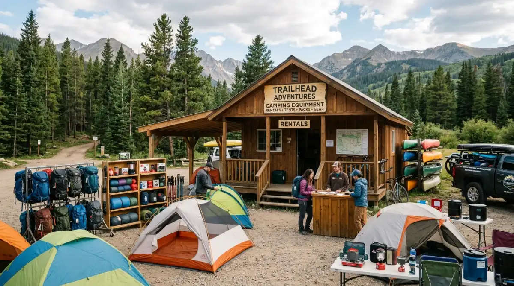
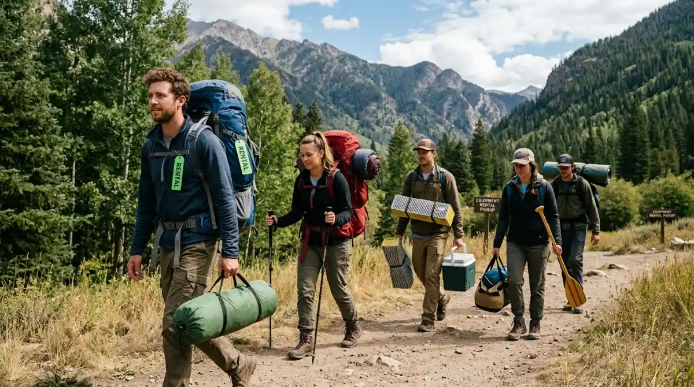

Salah satu penyedia jasa rental alat outdoor terpercaya di Malang untuk mendukung kenyamanan camping Anda.Pernah nggak sih kamu merasa ada di titik nadir kelelahan bekerja? Saat to-do list rasanya nggak pernah habis, revisi dari klien datang bertubi-tubi, dan kamu cuma ingin menekan tombol pause sejenak dari layar monitor. Ketika cuti tahunan akhirnya disetujui, bayangan melarikan diri ke alam bebas Kota Batu atau dataran tinggi Malang rasanya jadi obat penawar stres paling manjur.
Kamu sudah membayangkan duduk santai menikmati seduhan kopi panas di depan tenda sambil memandangi city lights yang menenangkan. Sempurna.
Tapi, realita di lapangan seringkali menghancurkan ekspektasi. Alih-alih mendapatkan ketenangan, banyak pemula justru menggigil semalaman, meringkuk kedinginan, dan tak bisa tidur sedetik pun karena hawa pegunungan sukses menembus pertahanan jaket tipis mereka. Niatnya mau healing, eh malah pulang membawa masuk angin dan badan meriang. Menyesal banget, kan? Waktu cuti yang begitu berharga hancur berantakan hanya karena salah strategi memilih alat tempur. Biar momen liburanmu tidak berujung trauma, mari kita bedah tuntas tips anti kedinginan dan panduan mencari rental alat outdoor Malang yang tepat!
Realita Suhu Pegunungan: Jauh Lebih Kejam dari AC Ruang Meeting
Kesalahan terbesar seorang first-timer adalah meremehkan hukum alam. Banyak yang berpikir, "Ah, di kantor suhu AC 18 derajat saja aku kuat cuma pakai cardigan, masa di gunung suhu 15 derajat nggak bisa?" Logika ini sangat menyesatkan.
Di dalam ruangan tertutup, udara bersifat statis. Sementara di alam terbuka, kamu berhadapan dengan variabel angin pegunungan (wind chill) dan tingkat kelembapan udara yang sangat tinggi menjelang dini hari. Angin yang berhembus konstan akan merampas panas dari permukaan kulitmu jauh lebih cepat daripada kemampuan tubuh memproduksi panas pengganti. Kondisi ini ibarat menjalankan software kelas berat secara bersamaan di komputer dengan spesifikasi RAM pas-pasan; sistem tubuhmu akan overheating secara terbalik (hipotermia) dan akhirnya crash. Oleh karena itu, persiapan alat yang memiliki spesifikasi penahan suhu ekstrem adalah investasi wawasan yang wajib kamu miliki sebelum berangkat.
Panduan Alat Anti Dingin: Spesifikasi Wajib untuk Pemula

Berbagai pilihan peralatan outdoor mulai dari tenda, sleeping bag, hingga peralatan masak yang bisa disewa sesuai kebutuhan.Supaya kamu tidak salah pilih saat meminjam atau menyewa alat, ada beberapa "Standar Operasional Prosedur" (SOP) perlengkapan yang mutlak harus dipenuhi. Jangan pernah berkompromi untuk daftar di bawah ini.
1. Tenda Double Layer: Firewall Utama dari Badai Malam
Memakai tenda single layer (satu lapisan) di dataran tinggi adalah sebuah keteledoran. Tenda jenis ini ibarat sistem keamanan website tanpa firewall dan enkripsi—sangat rapuh dan mudah kebobolan oleh serangan angin maupun hujan.
Suhu tubuhmu yang hangat di dalam tenda akan berbenturan dengan suhu beku di luar, menciptakan kondensasi atau embun di dinding bagian dalam. Jika tendamu hanya satu lapis, embun ini akan langsung menetes ke wajah dan kantong tidurmu. Pastikan kamu selalu menyewa tenda double layer. Lapisan luar (flysheet) berfungsi sebagai perisai utama menahan cuaca ekstrem, sedangkan lapisan dalam (inner) yang memiliki jaring memastikan sirkulasi udara berjalan lancar sehingga embun tertahan di luar area tidur.
2. Sleeping Bag Berbahan Polar: Perhatikan Comfort Rating
Jangan tertipu oleh bentuk sleeping bag yang tebal dan menggembung. Ketebalan bukan jaminan kehangatan. Parameter kualitas sebuah sleeping bag ditentukan oleh angka Comfort Rating-nya. Ini adalah batas metrik suhu di mana rata-rata orang dewasa bisa tidur nyenyak tanpa terbangun karena kedinginan.
Untuk wilayah dingin seperti Malang dan Batu, kamu butuh sleeping bag dengan comfort rating minimal 10°C hingga 15°C. Sangat disarankan memilih lapisan dalam berbahan polar fleece. Bahan polar sangat cerdas dalam memerangkap panas tubuh. Ingat, sleeping bag tidak memproduksi panas bagaikan pemanas elektrik; alat ini hanya berfungsi menahan panas alami tubuhmu agar tidak menguap. Pastikan ukurannya pas dengan postur tubuhmu—jika terlalu longgar, akan banyak udara dingin yang terjebak di dalam celah kosong.
3. Matras Aluminium Foil: Isolator Paling Krusial
Ini adalah elemen krusial yang paling sering diremehkan. Kamu bisa saja memakai jaket paling tebal sedunia, tapi jika punggungmu menempel pada matras karet biasa atau tikar tipis, kamu akan tetap kedinginan. Hukum fisika konduksi sedang bekerja di sini: panas tubuhmu disedot habis-habisan oleh tanah pegunungan yang bersuhu es.
Solusi paling efektif adalah menggunakan matras berbahan aluminium foil. Lapisan perak pada matras ini bekerja bagaikan cermin; memantulkan kembali panas tubuhmu ke atas, dan di saat yang sama memblokir intrusi hawa dingin dari dalam tanah. Menggelar matras foil sebelum menumpuknya dengan sleeping bag adalah layering dasar untuk tidur yang berkualitas.
4. Sistem Layering Pakaian (Konsep Tiga Lapis)
Membawa satu jaket super tebal tidak seefektif memakai sistem tiga lapis (layering). Anggap saja ini seperti menyusun struktur kode yang modular dan rapi:
- Base Layer: Pakaian yang melekat langsung di kulit. Gunakan bahan yang mudah menyerap keringat dan cepat kering (hindari katun murni karena jika basah oleh keringat, akan membuatmu kedinginan).
- Mid Layer: Lapisan insulasi untuk menahan panas, seperti sweater, jaket fleece, atau kemeja flanel tebal.
- Outer Layer: Lapisan pelindung luar berupa jaket windbreaker atau waterproof untuk menahan gempuran angin secara langsung.
Mengapa Menyewa Alat Lebih Masuk Akal Daripada Membeli?
Setelah mengetahui spesifikasi di atas, kamu mungkin berpikir, "Wah, mahal juga ya kalau harus beli semuanya." Jika frekuensi liburan alammu hanya satu atau dua kali dalam setahun, membeli peralatan spesifikasi tinggi adalah pemborosan anggaran yang nyata. Selain harganya jutaan, kamu akan direpotkan dengan urusan penyimpanan di kamar kos yang sempit dan proses perawatannya yang rumit. Tenda yang disimpan dalam keadaan lembap sedikit saja bisa berjamur dan lapisan waterproof-nya rusak.
Di sinilah opsi memanfaatkan jasa penyewaan alat menjadi sangat relevan. Konsepnya persis seperti menggunakan layanan berbasis cloud di kantormu; kamu hanya membayar saat butuh (sistem pay-as-you-go), tanpa pusing memikirkan biaya pemeliharaan, pencucian, atau depresiasi barang.
Menemukan Jasa Sewa yang Kredibel di Malang
Tentu saja, kamu tidak boleh asal memilih tempat penyewaan. Menggunakan perlengkapan outdoor menyangkut kenyamanan dan keselamatan fisikmu. Kamu butuh penyedia jasa yang sudah teruji rekam jejaknya, memiliki staf yang paham edukasi perlengkapan, dan transparan dalam memberikan informasi.
Salah satu yang sangat layak dipertimbangkan adalah layanan terintegrasi dari Batu Camping. Ada alasan kuat mengapa mereka patut direkomendasikan. Pertama, dari sisi kualitas dan akurasi barang (Quality Assurance). Peralatan yang mereka sewakan selalu dicek sebelum berpindah tangan. Kamu tidak akan menemukan frame tenda yang retak atau sleeping bag yang berbau apek. Semua barang dirawat dengan standar yang jelas, sehingga kamu bisa mempercayakan kenyamanan liburanmu pada alat-alat tersebut.
Kedua, transparansi informasi. Di era digital saat ini, kemudahan akses informasi adalah segalanya. Pengalaman memilih perlengkapan di katalog mereka terasa sangat fungsional dan bersih, seolah kamu sedang menelusuri layout website yang dibangun dengan tata letak visual (grid) yang presisi. Tidak ada harga yang disembunyikan.
Yang tak kalah penting adalah urusan navigasi lokal. Saat mengambil barang sewaan, hal yang paling bikin mood turun adalah nyasar karena titik Maps yang error. Tempat rental yang dikelola profesional memastikan identitas bisnis mereka tervalidasi di mesin pencari. Detail alamat jalan (street address) dan kode pos (postal code) tercatat dengan sangat akurat dalam sistem direktori lokal. Ini memastikan titik koordinat mereka sangat presisi, sehingga kamu bisa menghemat waktu perjalanan tanpa harus berputar-putar di jalanan kota Malang. Kepastian dan kejelasan seperti ini sangat penting untuk memulai perjalanan liburan yang bebas stres.
Penutup: Hargai Hak Cutimu
Waktu luang untuk melepaskan diri dari rutinitas kerja adalah kemewahan yang tidak bisa dibeli dengan mudah. Jangan biarkan ketidaktahuan teknis dalam menyiapkan perlengkapan menghancurkan momen yang sudah kamu nantikan berminggu-minggu. Kedinginan di tengah hutan karena tenda yang bocor atau sleeping bag yang tipis bukanlah sebuah petualangan seru untuk diceritakan di pantry kantor keesokan harinya; itu adalah bentuk keteledoran yang menyiksa diri sendiri.
Lakukanlah perencanaan dengan matang. Kenali medan yang akan kamu datangi, pahami spesifikasi alat yang mampu menahan suhu dingin, dan percayakan kebutuhan teknismu pada tempat rental yang profesional serta terpercaya. Mengurus persiapan secara detail di awal mungkin terasa sedikit repot, tapi percayalah, jauh lebih baik memastikan segalanya aman sekarang daripada menyesal saat malam tiba dan suhu mulai membeku. Susun rencanamu, booking perlengkapanmu, dan bersiaplah menyambut udara segar pegunungan yang akan mengembalikan kewarasanmu secara utuh. Selamat berlibur!
FAQ (Pertanyaan yang Sering Diajukan)